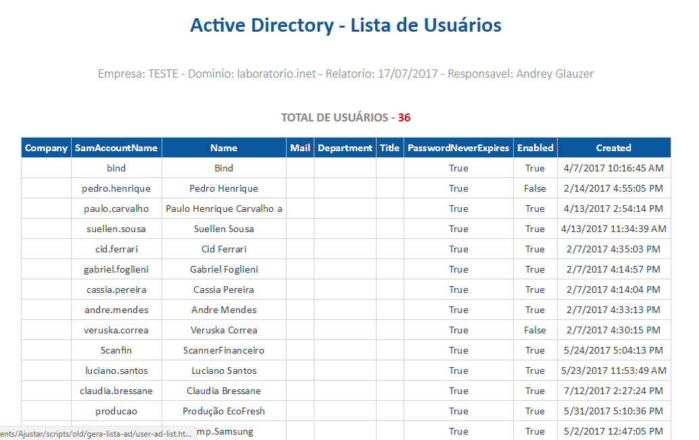

Relatório do Active Directory com Powershell
Como fazer auditória de Active Directory usando o powershell.
Como fazer auditória de Active Directory usando o powershell.
É sempre bom fazer auditoria dos servidores que você gerencia, para ter tudo documentado, e sempre que necessário já ter tudo pronto, e organizado.
Para facilitar um pouco essa questão eu criei alguns scripts em Powershell para facilitar essa minha tarefa de auditoria, aos poucos vou colocando todos os que eu já criei.
Esse primeiro é um bem simples que é justamente para ter controle dos usuários do Active Directory, coletando informações de senha nome, departamento entre outras coisas.
Primeiro antes de mais nada, é preciso definir algumas vaiáveis, então aqui eu estou colocando as variáveis que eu vou utilizar ao decorrer do script.
$relatorio = $null
$tabela = $null
$data = Get-Date -format "dd/MM/yyyy"
$arquivo = "user-ad-list.html"
$total = (Get-ADUser -filter *).count # Total de usuários que existem do AD
$dominio = (Get-ADDomain).Forest # Domínio
$analista = "Andrey Glauzer" # Analista
$empresa = "ECOFRESH" # EmpresaPara poder coletar todas as informações do AD vamos utilizar o módulo do powershell, para isso usamos.
Import-Module ActiveDirectoryAqui vamos coletar tudo, filtrando apenas os objetos que eu desejo.
$usuarios = @(Get-ADUser -filter * -Properties Company, SamAccountName, Name, Mail, Department, Title, PasswordNeverExpires, Enabled, Created)E aqui eu vou selecionar os objetos que eu filtrei.
$resultado = @($usuarios | Select-Object Company, SamAccountName, Name, Mail, Department, Title, PasswordNeverExpires, Enabled, Created)Vou ordenar o meu resultado pela company.
$resultado = $resultado | Sort "Company"E converter tudo para HTML. $tabela += $resultado | ConvertTo-Html -Fragment Aqui eu vou adicionar a minha personalização, da tabela e o formato que vou utilizar ela.
$formatacao=
"
<html>
<body>
<style>
BODY{font-family: Calibri; font-size: 12pt;margin: 0;border: 0;color:#2d3643;}
TABLE{border-collapse: collapse; font-size: 12pt; text-align:center;margin-left:auto;margin-right:auto; width='1000px';}
TH{border: 1px solid #c1c1c1;background: #0c59a0;padding: 5px;color: white;}
TD{border: 1px solid rgba(210, 210, 210, 0.95);padding: 5px;}
.total{padding: 0;font-weight: 300;color: #888;}
.titulo{border:0 !important;}
#header h3 {padding: 0;font-weight: 300;color: #888;}
#header h1 {font-weight: 100 !important;color: #0c59a0;}
#header a {text-decoration: none;color: #343434;display: inline-block;}
#header span {font-weight: 700;}
#header i{color: #0c59a0;font-size:1.5em;}
footer .fa-heart{color:red;}
figure {margin: 0;}
#header a {margin: 0em;text-align: center;vertical-align: middle;}
.animate {animation-name: LogoAnimate;animation-duration: .9s;}
@keyframes LogoAnimate {from {transform: scale(0);opacity: 0; }
50% {transform: scale(0);opacity: 0; }
82.5% {transform: scale(1.03);animation-timing-function: ease-out;opacity: 1;}
to {transform: scale(1);}}
footer {background-color: #0c59a0;color: #FDFDFD;text-align: center;padding: 0.6667em 0;margin-top: 1em;}
footer a {color:white;}
</style>
"
$titulo=
"
<table width='100%' border='0' cellpadding='0' cellspacing='0'>
<tr>
<td class='titulo'>
<header id='header'>
<a class='teste' href='#'><h1 class='animate'><span>Active Directory - Lista de Usuários</span></h1></a>
<h3>Empresa: $empresa - Dominio: $dominio - Relatorio: $data - Responsavel: $analista</h3>
</header>
</td>
</tr>
</table>
</body>
</html>
"
$footer="<footer><span>Feito com muito cafe - Andrey Glauzer @2017</footer>"Agora tenho que juntar tudo o que eu fiz, na ordem que eu desejo.
$relatorio = $formatacao + $titulo + $tabela + $footerNovamente vou converter tudo para o HTML.
$relatorio | Out-File $arquivo -Encoding Utf8E também vou salvar o resultado em CSV.
$resultado | Sort Company | Export-Csv ad-lista.csv -NoTypeInformation -Encoding Utf8Com todo o scrip montado, vamos à parte que nos intereça, a execução dele. Para executar é possivel que você precisa habilitar a execução de scripts do powershell, para fazer isso, abra ele em modo de administrador e execute o comando à baixo:
Set-ExecutionPolicy RemoteSignedFeito isso, partimos para a ação. Ao executar o script ele vai gerar dois arquivos no mesmo diretório onde ele está, um HTML e o outro CSV. Se tudo der certo, devemos receber o seguinte resultado.

É possivel ver o script completo no meu github Andrey Glauzer
Comentários para: "Relatório do Active Directory com Powershell"